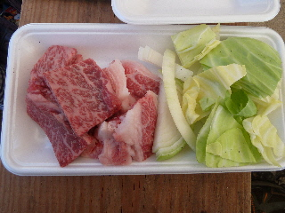
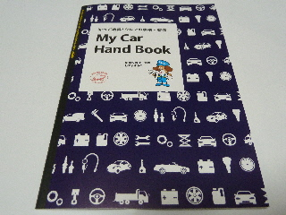
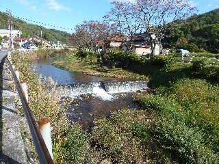
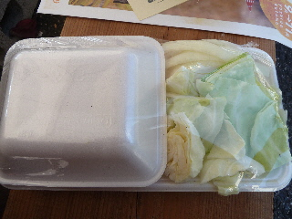
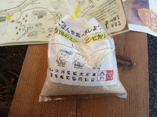
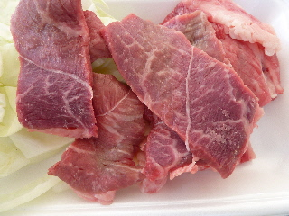
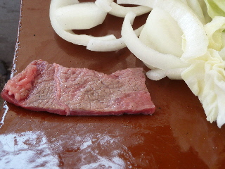
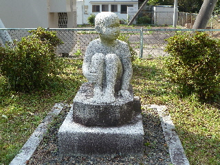
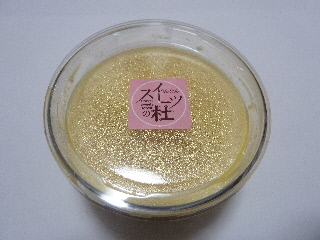

今年は焼き肉が出来ませんでした。
2016/10/30
瓦で焼肉を楽しみに「ななかまどフェスタ」に行ったのですが、今年は開催されていませんでした。
あー悲しい。
もうなくなってしまったのかな？
来年はあるかな？
今回は仕方ないので、玉子かけご飯をお腹いっぱい食べました。
島根県雲南市吉田町吉田１０６１
2016/10/30
瓦で焼肉を楽しみに「ななかまどフェスタ」に行ったのですが、今年は開催されていませんでした。
あー悲しい。
もうなくなってしまったのかな？
来年はあるかな？
今回は仕方ないので、玉子かけご飯をお腹いっぱい食べました。
2015/10/25
毎年恒例にしたい「ななかまど」の焼肉です。

瓦で丁寧に焼いていただきました。
牛肉美味しいなー。
お外でのんびり焼肉は楽しいです。

自動車点検の講習がやっていたので、受けました。
知らないことを教えてもらえて、ためになりました。
またどこかで、講習があったら受けようと思います。

ななかまどの後は、歩いて玉子かけシンポジウムに向かいました。
2014/10/26
今日は豪華に焼肉です。
雲南市吉田町のイベントでとってもお得な焼肉を食べました。

一人前900円です。
地元の牛肉ですよ！

焼肉を買ってクジを引いたら、このお米が当たりました。
ありがとうございます。

私の買ったお肉は、上側が赤身で下側が霜降りでした。
パックによって内容は色々あったみたいです。

瓦を使って焼肉です。
一枚一枚丁寧に焼いて、美味しくいただきました。
来年も是非行きたいです。
2013/10/27
日本たまごかけシンポジウムの後に、シャトルバスに乗ってななかまどフェスタに行きました。

雲南市役所 公民館・集会施設吉田交流センター・吉田農村環境改善センターがある場所です。
公共施設が集合してるんですね。
ちょっと寂しそうな像がありました。
奥出雲和牛のバーベキューや地元の食材を使ったパスタを食べたい！って思ったんですが、日本たまごかけごはんシンポジウムでお腹がいっぱいだったので食べれませんでした。
残念。
次はこっちを先にしなきゃって思いました。

テントで販売していたプリンを買ってかえりました。
まったりとしていて、濃い味のプリンで美味しかったです。
また見つけたら買いたいって思いました。
同時開催のイベント